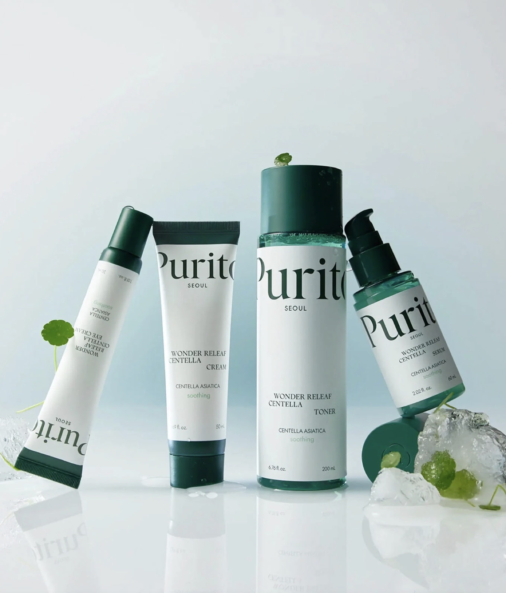
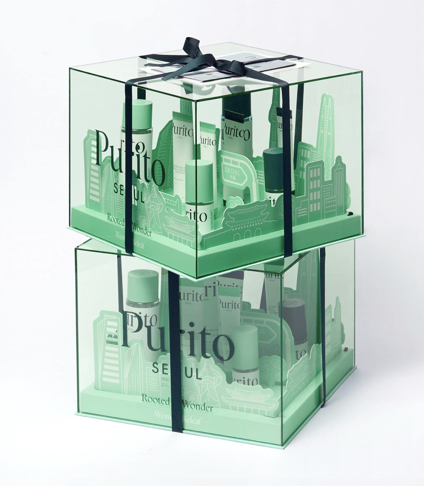
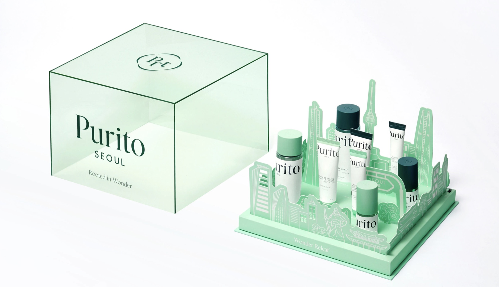

Educational Content
How Cica Works on Sensitive Skin
How Cica Works on Sensitive Skin
60–90 second educational video explaining centella science with credible sources.
Learn
E-commerce Growth Strategy
An independent strategic analysis of Purito's Turkish online presence: market context, customer personas, marketplace and social channels, conversion funnel, and measurement.

PURITO SEOUL · PRODUCT EDITORIALFACT Purito has an official Turkish online store. This case study focuses on improving discovery, product understanding, and the customer journey across its existing online presence.
SCOPE NOTE This portfolio draft uses publicly visible brand information and strategic hypotheses. It does not include commissioned market research, verified platform audience figures, proprietary sales data, or a dated competitor price audit. Any commercial rollout should validate these inputs before investment.
RESEARCH GAP The size and growth rate of the Turkish beauty e-commerce category, and the share attributable to K-beauty, are not quantified in this case study. Establish a baseline using current Ministry of Trade publications, marketplace category data, and a documented competitor audit before setting a market forecast.
WORKING HYPOTHESIS Instagram and TikTok can be tested as discovery channels, while expert-led explanations, creator reviews, and customer questions may help move shoppers into consideration. Validate channel contribution and payment preferences with local audience research and store analytics.
FACT Purito has an official Turkish e-commerce store at purito.com.tr. Product-level assortment, claims, sizes, availability, and pricing should be checked against the live catalogue before execution.
RECOMMENDATION Treat Trendyol, Hepsiburada, and Amazon Türkiye as potential discovery and sales channels to assess against the existing direct-to-consumer store. Prioritize only after checking current seller presence, margin, fulfilment requirements, brand control, and channel demand. Competitor visibility should be benchmarked through a documented social audit rather than assumed.
RECOMMENDATION Emphasize dermatological credibility, ingredient transparency, and routine-building education to differentiate from trend-driven K-beauty competitors.
| Brand | Price Position | Positioning | Marketplace Presence |
|---|---|---|---|
| COSRX | Audit current listings | Viral trend, accessibility | Trendyol, Hepsiburada |
| Anua | Audit current listings | Ingredient-forward, newer | Trendyol (growing) |
| Purito | Audit current listings | Dermatological, clean formula | Official store + selective marketplaces |
| Adjacent reference: Cetaphil | Not comparable | Accessible, pharmacy-distributed | All channels |
No competitor price ranges are presented because a dated, like-for-like listing audit is not included. Compare equivalent product sizes, seller authorization, shipping, promotions, and review volume before drawing price-position conclusions.
Ingredient-obsessed; researches skincare deeply. Willing to pay premium for proven formulas. Values dermatologist endorsements.
Cica + proven formula. Dermatologist-tested.
Discovers skincare via viral trends. Budget-conscious but aspirational. Uses installments (taksit) to afford premium brands.
Help me understand what fits my routine — and what it costs.
Buys gifting bundles for friends/family. Values premium packaging. Seeks "safe" recommendations for varied skin types.
A considered gift, with clear guidance for choosing a routine.
RECOMMEND Evaluate Trendyol as the first marketplace test because of its broad shopping use case; assess Hepsiburada and Amazon Türkiye as secondary options. Confirm current category demand, seller terms, fees, and payment features before selecting a channel.
⚠️ Concept: This is an illustrative mockup of how Purito could be positioned on Trendyol. Product names, prices, and features are conceptual and do not represent actual current listings. Do not use these as reference for real pricing or product availability.

Purito gift-box photography · moodboard referenceSource: For verified current Purito products and pricing, visit purito.com.tr or check Trendyol marketplace directly.
RECOMMEND Shift from brand-only content to ingredient education + UGC.
⚠️ Concepts: These are example content themes, not actual campaigns or partnerships. Execution would require brand alignment and transparent partnership disclosures.
60–90 second educational video explaining centella science with credible sources.

Partnership Model Skincare Educator PartnershipClearly disclosed collaboration with dermatologist or skincare expert. Transparent terms and affiliate link if applicable.
User-generated content (with permission). Real customer feedback shared transparently with credit.
Goal: Reach ingredient-conscious consumers
Channels: TikTok organic + paid, Instagram Reels, hashtag strategy (#cicakrem #koreacilt)
Goal: Build trust through education
Tactics: Dermatologist reviews, ingredient explainers, customer testimonials, product quiz
Goal: Drive first purchase
Levers: Clear delivery and returns information, transparent payment options, routine bundles, visible product benefits, and credible stock information. Confirm the current free-shipping threshold on the official store before publishing it.
Goal: Drive repeat purchase in 60–90 days
Tactics: Post-purchase email sequence, loyalty offer (15% off repeat), SMS reorder reminder
Conversion rate
(visitor → purchase)
Average order value
(1–2 products + bundle)
Customers who
repurchase in 90d
Customer acquisition cost
(via paid social)
These are measurement prompts, not performance targets. Set numeric goals only after collecting a baseline, confirming contribution margin and customer lifetime value, and agreeing on a measurement window.
FRAMEWORK (Not Forecasts) The following outlines what to track and how to measure progress. This case study does not have access to Purito's internal Turkish e-commerce baseline; therefore, it proposes a measurement system rather than forecasting performance.
| Metric | What It Measures | How to Track | Illustrative Reference |
|---|---|---|---|
| Social Reach | Content visibility and audience growth | Instagram Insights, TikTok Analytics | Growth from baseline → trend up |
| Engagement Rate | How audience interacts with content | Platform-native analytics (likes, comments, shares) | Establish a format-specific baseline |
| Site Conversion Rate | % of visitors who make a purchase | Google Analytics 4, Shopify | Compare with a relevant, sourced category benchmark |
| Customer Acquisition Cost (CAC) | Ad spend ÷ new customers | Meta Ads Manager, platform attribution | Set against contribution margin and customer lifetime value |
| Average Order Value (AOV) | Revenue ÷ number of orders | Shopify, Trendyol analytics | Target: Higher with bundled products |
| Repeat Purchase Rate | % of customers who buy again | Customer database, email platform | 60–90 day window; healthy: 15–25% |
| Customer Lifetime Value (CLV) | Total revenue per customer | CRM or analytics platform | CLV ÷ CAC should be ≥ 3:1 for sustainability |
Collect data from all platforms (Google Analytics 4, Meta Ads, TikTok, Shopify, marketplace feeds)
Analyze trends—what content performed well, which channels drove orders, where did visitors drop off
Plan tactical adjustments (reallocate budget, test new creative angles, refine audience targeting)
Execute changes and monitor performance daily
Educational vs. lifestyle vs. founder-voice content → measure engagement and traffic
Ingredient focus vs. skin-benefit focus vs. routine-building → measure click-through and conversion
Micro-educator vs. broader beauty creator → measure reach, engagement, referral quality
Bundle pricing, free-shipping threshold, seasonal promotions → measure AOV and conversion lift
Product education vs. promotion vs. community → measure open rate, click rate, conversion
RECOMMENDATION For accelerated growth in Turkey's e-commerce market, Purito should prioritize: (1) Marketplace optimization through a curated, consistent presence across the official store and selected marketplaces, (2) Educational content positioning the brand as a cica/ingredient authority rather than trend-following, and (3) Transparent partnerships with dermatologists and skincare educators to build credibility among ingredient-conscious consumers.
This is an independent portfolio project created to demonstrate e-commerce strategy, digital marketing, and brand analysis expertise. It is not:
Data Transparency: Specific sources (e.g., purito.com.tr) are linked directly. Market-size estimates, growth percentages, and competitive claims without explicit sources are illustrative assumptions. Any real e-commerce strategy would require proprietary research, verified data, and collaboration with brand leadership.
Product & Pricing: Product mockups are conceptual. For verified current Purito products, pricing, and marketplace listings, visit purito.com.tr directly.
Rooted in wonder, ready for Türkiye
Purito Seoul · gift-box editorial · moodboard reference